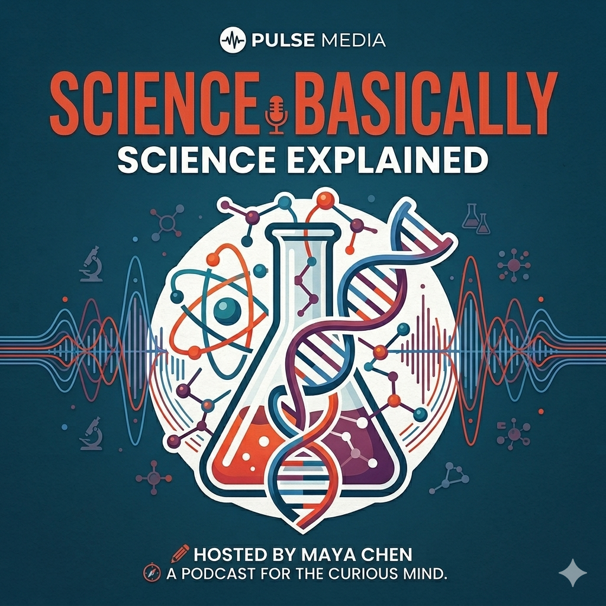
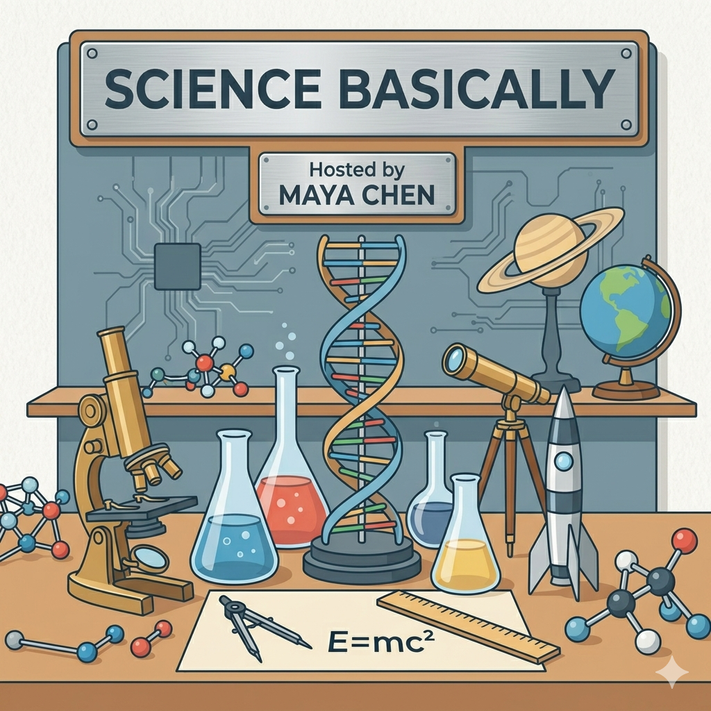

Poisson Surface Reconstruction
Maya and Dr. Alex Romero unpack how noisy 3D point clouds become smooth digital surfaces, and why a famous global reconstruction method still matters.
Science Podcast
Big research papers, human explanations, and just enough curiosity to make intimidating ideas feel fun.

Episode 01
Maya and Dr. Alex Romero unpack how noisy 3D point clouds become smooth digital surfaces, and why a famous global reconstruction method still matters.
Why Listen
The episode starts with a simple question and builds the math only as far as it helps.
From cultural heritage to graphics pipelines, the applications stay grounded in the real world.
Host questions stay short, and the answers give enough detail without turning into a lecture.
About The Show
Science, Basically is built around a simple premise: research gets more interesting when somebody translates it with care. Each episode takes a paper, a method, or a scientific idea that normally lives behind jargon and turns it into a conversation.

Transcript
Loading transcript...